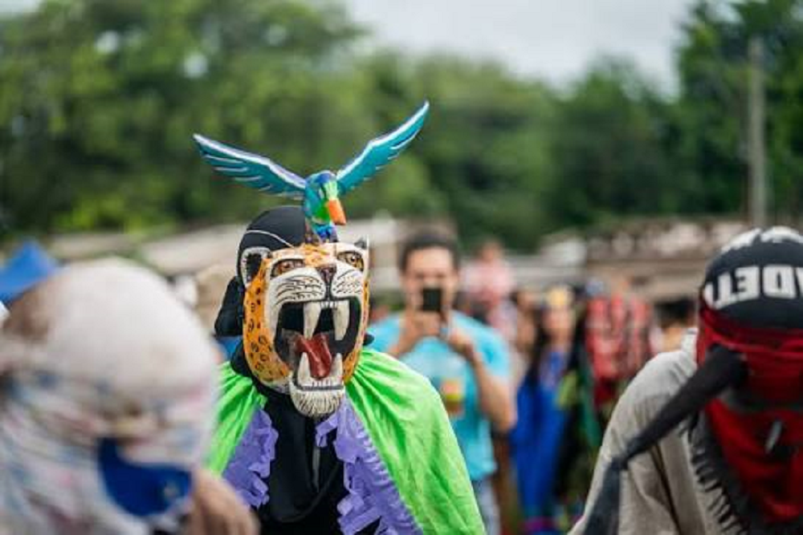

Los idiófonos de los Ava
Nota 029
Inicio > Blog Bitácora de un músico > Nota 029
Los Ava, un pueblo de habla guaraní de las tierras bajas de Bolivia y Argentina, preservaron una compleja tradición musical modelada por influencias amazónicas, arawak, andinas y coloniales, pese a siglos de guerras, desplazamientos e intervención misionera. Estrechamente vinculada a rituales como el aréte guásu, su herencia musical incluye tambores, flautas, trompetas, silbatos, idiófonos y el singular violín turumi, generalmente elaborados artesanalmente por los propios intérpretes e insertos en prácticas ceremoniales, sociales y simbólicas que articulan música, danza, memoria, sexualidad, guerra y relaciones entre vivos y muertos.
Entre los idiófonos de los Ava se encontraba el yandúgua, un bastón rítmico semejante a un paraguas, utilizado por el yingári o "maestro de danza" en el ayarisse, un canto-danza interpretado durante el aréte en honor de Ñandu Tumpa. Se fabricaba con plumas de avestruz atadas alrededor de una caña larga y recta.
Otro idiófono era el yvýra nambichái, o "zarcillo de árbol", unas tobilleras hechas con semillas obtenidas de un tipo de enredadera cubierta de zarcillos.
Más información sobre estos artefactos sonoros puede encontrarse en el libro digital de acceso libre Instrumentos musicales de los Ava, accesible a través de la sección "Libros digitales sobre música. Serie 1".